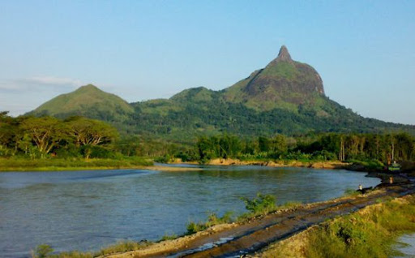

Bukit Serelo
Bukit Serelo, yang juga dikenal sebagai Bukit Jempol atau Bukit Telunjuk, merupakan ikon alam Kabupaten Lahat, Sumatera Selatan, dengan bentuk puncak yang unik menyerupai jari tangan dan ketinggian sekitar 900 meter di atas permukaan laut. Terletak di Desa Ulak Pandan, bukit ini menjadi destinasi favorit bagi pecinta alam dan pendaki karena jalurnya yang menantang dengan kemiringan hingga 75 derajat. Dari puncaknya, pengunjung disuguhi panorama menakjubkan berupa hamparan hutan tropis, lembah hijau, Sungai Lematang, serta pegunungan yang mengelilinginya. Selain itu, kawasan seluas 210 hektar ini juga menjadi habitat berbagai flora dan fauna seperti pohon puspa, sungkai, kera, rusa, dan kancil, serta menawarkan aktivitas menarik seperti arung jeram dan bird-watching, menjadikannya lokasi wisata yang kaya akan nilai petualangan, edukasi, dan konservasi.
Kembali